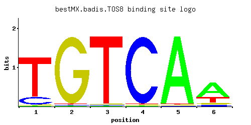

TOS8
YGL096W
Homeodomain-containing protein and putative transcription factor found associated with chromatin; target of SBF transcription factor; induced during meiosis and under cell-damaging conditions; similar to Cup9p transcription factor
Best-performing DNA-binding model.

View and copy the recommended matrices ↘
A | 0.01 0.01 0.01 0.01 0.97 0.64 C | 0.16 0.01 0.01 0.97 0.01 0.07 G | 0.01 0.97 0.01 0.01 0.01 0.07 T | 0.82 0.01 0.97 0.01 0.01 0.22
A | 1 1 1 1 97 64 C | 16 1 1 97 1 7 G | 1 97 1 1 1 7 T | 82 1 97 1 1 22
A | -3.47 -3.47 -3.47 -3.47 1.11 0.69 C | -0.12 -2.89 -2.89 1.68 -2.89 -0.94 G | -2.89 1.68 -2.89 -2.89 -2.89 -0.94 T | 0.94 -3.47 1.11 -3.47 -3.47 -0.37
Alternative candidate matrices 1
Historical matrix candidates from the original ScerTF database. Expand a source to inspect its original logo, scores, and matrix values.
TOS8Foat et. al.P = 1View matrix ↘
Gene-level annotations and interactions.
Genes bound in ChIP-chip experiments 49 genes
YAL053W, YAL054C, YBL027W, YBL028C, YBL109W, YBL111C, YBL112C, YBL113C, YBR050C, YBR127C, YDL082W, YDL083C, YDR252W, YDR543C, YDR544C, YDR545W, YER189W, YER190W, YGR296W, YHR091C, YHR193C, YHR194W, YIL018W, YJL005W, YJR065C, YJR066W, YJR116W, YJR123W, YKL049C, YLL065W, YLR143W, YLR207W, YLR463C, YLR465C, YLR467W, YNL045W, YNL069C, YNL239W, YNL240C, YNR029C, YNR030W, YNR037C, YNR038W, YOR313C, YOR314W, YOR318C, YOR319W, YPR131C, YPR132W
Genes affected by TF deletion 25 genes
YDL100C, YDR222W, YHR146W, YPL014W, YDL037C, YDR132C, YHR085W, YLR342W, YOL136C, YBR129C, YMR104C, YLR035C, YMR023C, YMR145C, YLL067C, YNL289W, YGR139W, YBR054W, YKR032W, YLR297W, YMR034C, YBR244W, YOL101C, YGL096W, YKR003W